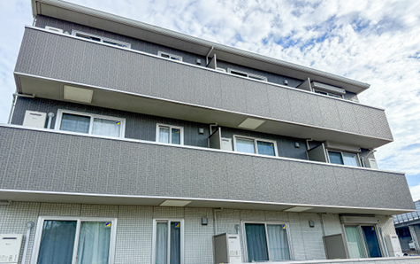
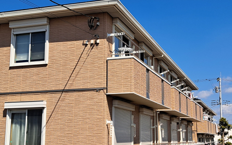
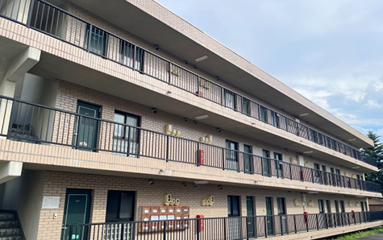
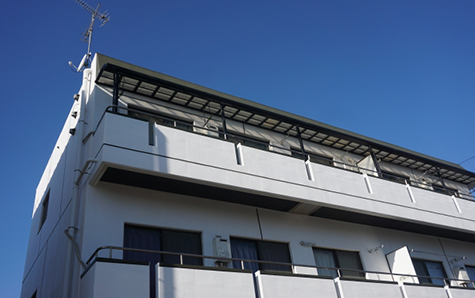
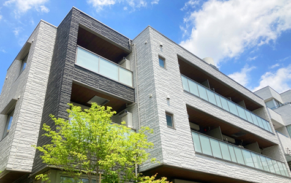
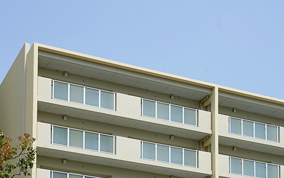

一棟アパート・
マンション
- ホーム
- 一棟アパート・マンション
一棟アパート・
マンション
相模原市・厚木市で一棟アパート・マンションの売却を検討している方へ、アイモットが収益用不動産に適した売却方法をご案内します。一棟物件は、土地や建物の状態だけでなく、家賃収入、入居率、管理状況、修繕履歴なども価格に影響します。
代表が物件の収益性と売主様のご事情を整理し、納得できる出口を一緒に考えます。
一棟アパート・マンションは収益性も重視

一棟アパート・マンションは、居住用の戸建てや区分マンションとは異なり、収益用不動産としての価値が重視されます。土地や建物の価格に加え、現在の家賃収入、入居率、運営費用、将来の修繕負担などをもとに査定されます。物件の収支資料を整え、購入後の運営を具体的にイメージできる情報を提示することが重要です。
※表は左右にスクロールして確認することができます。
| 主な査定項目 | 確認される内容 |
|---|---|
| 家賃収入 | 現在の賃料、共益費、駐車場収入など |
| 入居状況 | 入居率、空室期間、滞納の有無 |
| 建物状態 | 築年数、設備、修繕履歴 |
| 管理状況 | 管理方法、清掃、入居者対応 |
| 土地条件 | 面積、形状、接道、用途地域 |
| 将来性 | 周辺需要、建て替え、土地活用 |
一棟物件の査定で重視されるポイント

一棟アパート・マンションの価格は、単純に土地と建物の価値を合計して決まるものではありません。購入希望者は、購入後にどの程度の収益を得られるか、将来どのような費用がかかるかを確認します。そのため、現在の収入だけでなく、空室、修繕、管理費などを含めた実際の収益状況を正確に整理する必要があります。
年間の家賃収入と利回り
収益用不動産では、年間の家賃収入を物件価格で割った利回りが、購入判断の目安になります。ただし、満室を想定した表面利回りだけでなく、管理費、修繕費、固定資産税などを差し引いた実質的な収益も重要です。
現在の賃料や契約内容を整理し、購入希望者が収支を確認できる資料を準備しましょう。
入居率と空室の状況
入居率が高く、安定した家賃収入がある物件は、購入後すぐに収益を得られるため評価されやすくなります。一方、空室が多い場合でも、募集条件や管理方法を見直すことで改善の可能性を示せる場合があります。
空室期間、過去の入居率、募集賃料などを確認し、現状と課題を正確に説明することが大切です。
賃料設定と入居者との契約内容
現在の賃料が周辺相場と比べて適正か、長期間変更されていないかを確認します。また、普通借家契約や定期借家契約、敷金、更新条件など、入居者ごとの契約内容も重要です。賃料が相場より低い場合は、将来的な収益改善を期待されることもありますが、簡単に変更できるとは限りません。契約書をそろえて正確に伝えましょう。
建物の状態と修繕履歴
屋根、外壁、防水、給排水設備、共用部分などの状態は、購入後の修繕費に影響します。大規模修繕や設備交換をおこなっている場合は、工事内容や時期、費用が分かる資料を準備しましょう。
修繕が必要な箇所を隠すと、売買契約後のトラブルにつながる可能性があります。現状を開示し、価格や条件に反映することが重要です。
土地の価値と将来の活用方法
一棟物件は収益性だけでなく、土地としての価値も査定されます。土地の広さ、形状、接道、用途地域、容積率などによって、建て替えや別用途への活用可能性が変わります。築年数が古く、現在の収益が低い場合でも、土地の価値や将来の開発可能性が評価されることがあります。建物と土地を分けて確認しましょう。
一棟物件を売却する主な方法

一棟アパート・マンションの売却方法には、仲介で投資家や法人の買主を探す方法と、不動産会社へ直接売却する買取があります。高値を目指す場合は仲介、早期売却や管理負担の解消を優先する場合は買取が向いています。
物件の収益状況や売却期限を整理し、適した方法を選びましょう。
※表は左右にスクロールして確認することができます。
| 比較項目 | 仲介 | 買取 |
|---|---|---|
| 買主 | 個人投資家・法人など | 不動産会社 |
| 売却価格 | 市場価格に近い価格を目指しやすい | 仲介より低くなる傾向 |
| 売却期間 | 買主が見つかるまで必要 | 比較的短期間 |
| 資料開示 | 詳細な収支資料が重要 | 現地・資料確認後に条件提示 |
| 向いている方 | 価格を重視する方 | 早さや確実性を重視する方 |
仲介で投資家や法人へ売却する
仲介では、収益用不動産を探している個人投資家や不動産会社、事業法人などへ物件を紹介します。安定した収益があり、管理状態が良い物件は、複数の購入希望者から検討される可能性があります。購入希望者が融資を利用する場合は、審査に時間がかかることもあります。売却期限に余裕があり、価格を重視する方に適しています。
買取で早期売却を目指す
買取では、不動産会社が一棟物件を直接購入します。一般の投資家を探す期間が不要なため、売却時期を調整しやすくなります。空室が多い、修繕が必要、管理に課題がある物件でも相談できる可能性があります。
ただし、仲介より価格が低くなる傾向があるため、売却後の手取り額と管理を続ける負担を比較しましょう。
入居者がいるまま売却できます

一棟アパート・マンションは、入居者がいる状態でも売却できます。売買後は新しい所有者が賃貸人としての地位を引き継ぎ、入居者との契約も原則として継続されます。入居者全員に退去してもらう必要はありません。
ただし、契約内容や敷金、家賃滞納などを正確に整理し、買主へ引き継ぐ必要があります。
賃貸借契約を整理する
各部屋の賃貸借契約書を確認し、賃料、共益費、敷金、契約期間、更新条件などを一覧にします。契約書を紛失している場合や、口頭で条件を変更している場合は、現状を確認する必要があります。購入希望者は、売却後にどのような契約を引き継ぐのかを重視します。情報を整理し、正確に開示しましょう。
敷金や預り金を引き継ぐ
入居者から預かっている敷金などは、売却時に買主へ引き継ぐことが一般的です。売買代金とは別に精算する場合もあるため、部屋ごとの預り金を確認します。帳簿と契約書の内容が異なる場合は、事前に整理が必要です。引き継ぐ金額や方法を売買契約書へ明記し、売主と買主の認識を合わせましょう。
入居者への通知時期を確認する
物件を売却することを、契約前に入居者へ伝える必要があるとは限りません。早く伝えることで不安を与え、退去につながる可能性もあります。売却後は、所有者や家賃の振込先、管理会社などの変更を通知します。通知の内容や時期は、不動産会社や管理会社と相談し、入居者への影響を抑えながら進めましょう。
一棟物件を高く売るための準備

一棟アパート・マンションを高く売るには、建物をきれいに見せるだけでなく、収益状況と管理状態を分かりやすく示すことが重要です。購入希望者が検討しやすい資料をそろえ、現在の課題と改善の可能性を正確に伝えましょう。大がかりな修繕を先におこなうのではなく、費用対効果を確認してから判断します。
レントロールを整える
レントロールとは、各部屋の賃料、共益費、契約状況などを一覧にした資料です。入居率や年間収入を把握するために使用され、一棟物件の売却では重要な判断材料になります。現在の契約内容と一致しているか、空室や滞納が正しく反映されているかを確認しましょう。正確な資料を用意することで、購入希望者の不安を減らせます。
収支資料を準備する
家賃収入だけでなく、管理委託費、共用部の電気代、清掃費、修繕費、固定資産税などの支出も整理します。購入希望者は、実際にどの程度の利益が残るかを確認します。
直近の収支だけでなく、過去数年分があると運営状況を判断しやすくなります。収支の変動が大きい場合は、その理由も説明できるようにしましょう。
共用部分の印象を整える
購入希望者は、外観、エントランス、廊下、ごみ置き場、駐輪場などの共用部分を確認します。清掃が不足していると、管理状態や入居者の質に不安を持たれる可能性があります。大規模な工事をしなくても、清掃、照明交換、不要品の撤去などで印象を改善できます。査定前に管理会社と確認しましょう。
修繕履歴と今後の予定を整理する
過去におこなった外壁塗装、防水工事、設備交換などの資料を準備します。また、今後必要になりそうな修繕についても把握しておきましょう。修繕予定を隠すのではなく、必要な費用を見込んで価格へ反映することで、購入希望者が判断しやすくなります。工事をおこなう場合は、売却価格への効果を確認してから進めます。
売却前に確認したい税金と費用
一棟アパート・マンションの売却では、仲介手数料、印紙税、登記費用、ローンの一括返済手数料などがかかる場合があります。また、売却によって利益が出た場合は、譲渡所得税が課税される可能性があります。建物部分の減価償却も取得費の計算へ影響するため、税理士などへ確認し、手取り額を把握しましょう。
ローン残高と抵当権を確認する
ローンが残っている一棟物件を売却する場合は、売却代金などで完済し、抵当権を抹消することが原則です。金融機関に残高と一括返済の手続きを確認しましょう。
売却価格が残高を下回る可能性がある場合は、自己資金の準備や金融機関との交渉が必要です。返済に不安がある場合は、早めに相談することが大切です。
譲渡所得税を確認する
売却価格から取得費と譲渡費用を差し引いて利益が出ると、譲渡所得税がかかる可能性があります。一棟物件では、建物の減価償却によって取得費が小さくなり、想定より利益が大きくなる場合があります。所有期間や物件の取得経緯によっても計算は異なります。売却前に税額の目安を確認しましょう。
一棟物件の売却で注意したいこと
一棟アパート・マンションは、入居者や管理会社など多くの関係者がいるため、情報共有や引き継ぎを慎重におこなう必要があります。賃料滞納、設備故障、近隣トラブルなど、把握している内容は正確に開示しましょう。収益性を良く見せるために事実と異なる資料を提示すると、契約後の問題につながります。
収益や入居状況を正確に伝える
満室想定の収入と、現在実際に得ている収入は分けて説明する必要があります。空室、滞納、フリーレントなどがある場合も正確に記載しましょう。購入希望者は、資料をもとに融資や購入判断をおこないます。事実と異なる内容があると、契約解除や損害賠償につながる可能性があります。
不具合やトラブルを隠さない
雨漏り、設備故障、入居者トラブル、近隣からの苦情など、把握している内容は不動産会社に伝えましょう。問題があるから売却できないとは限りません。
現状を正確に整理し、必要に応じて価格や契約条件に反映することで、買主も判断しやすくなります。口頭だけでなく、書面での開示が重要です。
収益用不動産に強い会社を選びましょう
一棟アパート・マンションの売却では、一般的な住宅売却とは異なる知識が必要です。収支、利回り、賃貸借契約、管理、融資評価を理解し、投資家や法人へ適切に提案できる不動産会社を選びましょう。査定価格の高さだけでなく、資料の整理や売却後の資産計画まで相談できるかを確認することが大切です。
収益性の根拠を説明できるか
一棟物件の査定では、どの家賃収入を基準にするかを確認し、どの程度の利回りを想定したのかを確認しましょう。表面利回りだけでなく、空室や運営費用をどのように評価しているかも重要です。土地や建物の価値を含め、査定価格の根拠を具体的に説明できる担当者へ相談しましょう。
購入対象者に合わせた販売ができるか
同じ一棟物件でも、個人投資家、法人、不動産会社など、購入対象者によって重視する点が異なります。安定した収益を求める買主もいれば、空室改善や建て替えを目的とする買主もいます。物件の特徴に合う購入対象者を見極め、適切な資料と方法で販売できる会社を選ぶことが重要です。
売却後の資産計画まで相談できるか
一棟物件の売却は、資産整理や組み替えの一部であることも少なくありません。売却代金の使い道、借入金の返済、次の投資、相続対策などを含めて検討する必要があります。目先の売却だけでなく、売主様の今後の資産計画を整理し、必要に応じて専門家と連携できる会社へ相談しましょう。
一棟アパート・マンション売却を支援します

一棟アパート・マンションを納得できる条件で売却するには、物件の収益性、入居状況、管理状態、土地の価値を正確に把握することが重要です。価格だけでなく、空室、修繕、ローン、売却後の資産計画まで整理し、仲介・買取から適した方法を選びましょう。資料がそろっていない段階でも、現状の確認から始められます。
収益性とご事情を整理してご提案します
アイモットでは、一棟アパート・マンションの査定価格を提示するだけではなく、家賃収入、入居率、修繕状況、ローン残高、売却後の資産計画まで丁寧に整理します。楠本代表が直接対応し、仲介・買取を含む選択肢から、売主様が納得できる方法をご提案します。相模原市・厚木市の収益用不動産売却は、方針が決まっていない段階でもご相談ください。